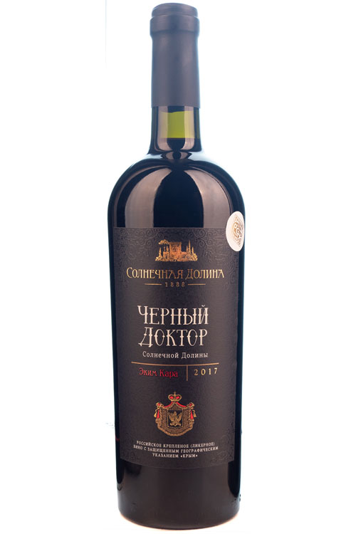
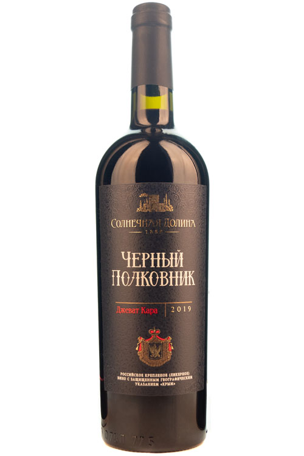
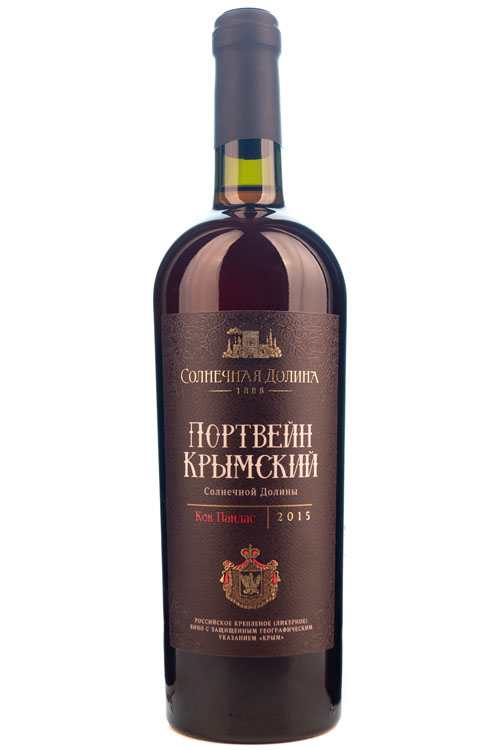
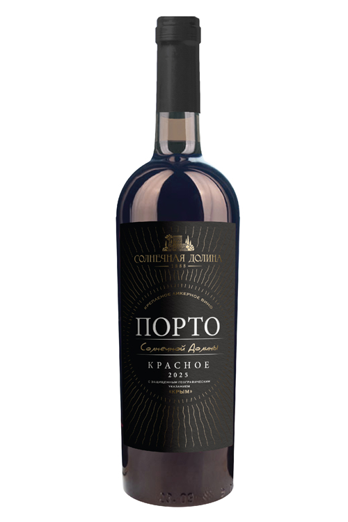
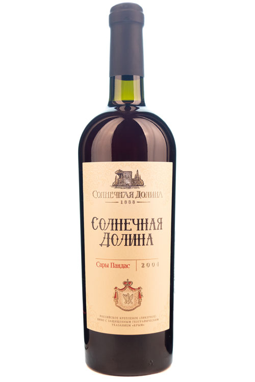
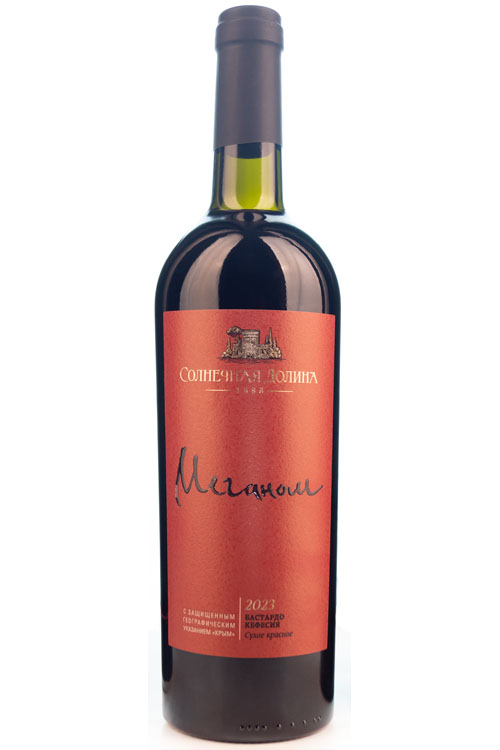
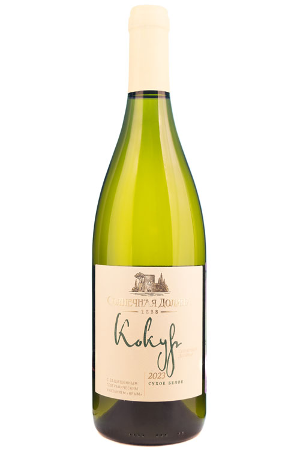
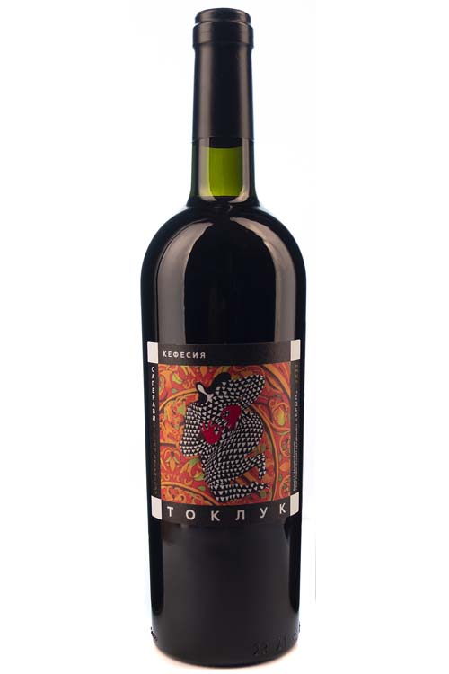
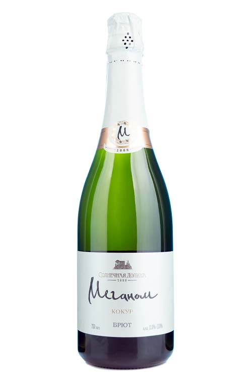

Коллекция долины
От ликерных легенд, зреющих в подвалах Архадерессе, до молодых брютов Меганома — девять вин, с которых стоит начать знакомство с долиной.

Черный Доктор Солнечной Долины
ликерное выдержанное красное
эким кара, кефессия, джеват кара

Черный Полковник
ликерное выдержанное красное
одесский черный, бастардо магарачский, каберне совиньон, джеват кара, кефессия

Портвейн Крымский Солнечной Долины
ликерное выдержанное белое
кокур белый, ркацители, кок пандас, капсельский белый, солнечнодолинский

Порто Солнечной Долины красное
ликерное красное
одесский черный, мерло, каберне совиньон

Солнечная Долина
ликерное выдержанное белое
сары пандас, кок пандас, солнечнодолинский, мускат белый, токайские, кокур белый

Меганом красное
сухое красное
бастардо магарачский, кефесия · лозы 30–35 лет

Кокур Солнечной Долины
сухое белое
кокур 100 % · лозы более 35 лет

Токлук Саперави Кефесия
сухое красное
саперави, кефесия

Меганом Кокур
игристое выдержанное белое брют
кокур белый
Не знаете, с чего начать?